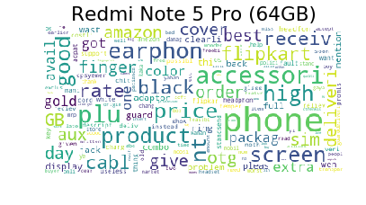
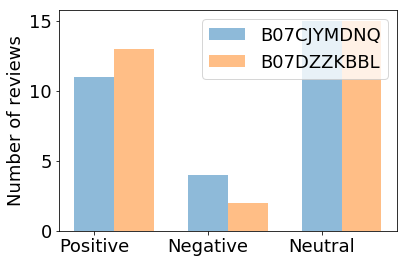
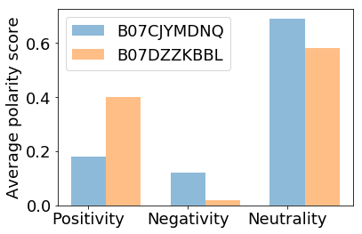

By-Akanksha Goel
With a wide pool of unstructured Text Data coming from different sources like Social Media,Reviews and Feedbacks from various customers,written Documents converted into Text or Survey Reports,
Questions
- How to get insights on customer perspective in this huge corpus of unstructured Data?
- How to understand different opinions from different customers and get common ground perspective?
- How to classify Text into diverse categories?
- How to generate Visuals that give clear picture from this unordered Data?
Text Analytics is the way!!!
What is Text Analytics?
The process of generating inferences and patterns from the pool of unstructured Data is refered to as Text Analytics. Text Analytics also termed as Text mining include various Natural Language Processing Techniques such as
Text Summarisation,
Text clustering,
Text classification,
Visualizations and
Opinion mining or Sentiment Analysis,
to understand meaning in this Huge dataset.
Sentiment Analysis is the major application of Text Analytics.
Sentiment Analysis and its Application
What is Sentiment Analysis?
Sentiment Analysis also refered to Opinion mining is the process of understanding whether piece of text is positive,negative or neutral and to what extent.Text can be in form of feedbacks,Reviews,Survey results,Tweets with different emoptions associated with them.
Sentiment Analysis helps to identify overall View of masses on particular Brand or product.
Polarity of opinion is associated with each word in a sentence.
For Example:
| Text | Positive Polarity Score | Negative polarity Score | Neutral polarity score | Sentiment |
|---|---|---|---|---|
| Akanksha is Good: | 0.9 | 0.0 | 0.1 | Positive |
| Akanksha is Bad: | 0.0 | 0.9 | 0.1 | Negative |
Application of Sentiment Analysis
There are so many products in market having same configuration.
For Example:When buying mobile phones,there are so many choices and even the set of features are same.
How to know which one to buy?
In this post Sentiment analysis is used on Amazon reviews of mobile to know which one is the best product.
Implementation in Python
Following 4 steps to do in depth analysis on different products and gives us the best product.
- Loading the Dataset
- Preprocessing of the Dataset
- Sentiment Analysis.
- Data Visualisation.
Requirements
Tool Requirements
-
Download Anaconda(https://www.anaconda.com/downloads)
Or
Directly install Python 3(https://www.python.org/downloads/) -
Create Virtual Environment to use different versions of Python when required and use Conda to install Packages in Anaconda Prompt. (https://uoa-eresearch.github.io/eresearch-cookbook/recipe/2014/11/20/conda/)
Or
Python PIP library to install all packages in python (https://pip.pypa.io/en/stable/installing/)
Package Requirements:
- Install Python Requests package (http://docs.python-requests.org/en/master/user/install/) using command:
Conda install Requests
or
PIP install Requests
Similarly, 2. Install Python-Dateutil(https://pypi.org/project/python-dateutil/) 3. Install Python LXML package (https://lxml.de/installation.html) 4. Python Nltk package and Nltk data (https://www.nltk.org/data.html) 5. Python Matplotlib Package (https://matplotlib.org/users/installing.html) 6. Python Pandas Package (https://pandas.pydata.org/) 7. Python Numpy Package 8. Python wordcloud Package
#Importing all the packages
from lxml import html
import json
import string
from dateutil import parser as dateparser
from time import sleep
from nltk.tokenize import sent_tokenize, word_tokenize
from nltk.stem import PorterStemmer
from nltk.corpus import stopwords
from nltk.tokenize import word_tokenize
from nltk.sentiment.vader import SentimentIntensityAnalyzer
import requests
import json,re
from subprocess import check_output
from wordcloud import WordCloud, STOPWORDS
import pandas as pd
import numpy as np
import matplotlib as mpl
import matplotlib.pyplot as plt
%matplotlib inline
import warnings
warnings.filterwarnings('ignore')
Loading the Dataset
In this post I have scraped reviews of Mobiles from Amazon Website using requests and Lxml library of Python.
def ParseReviews(asin,Number_of_Pages):
ratings_dict = {}
reviews_list = []
# Number_of_Pages=4# You can iterate for as many number of Pages
for i in range(1,Number_of_Pages+1):
amazon_url='https://www.amazon.in/product-reviews/'+asin+'/ref=cm_cr_othr_d_paging_btm_+'+str(i)+'+?pageNumber='+str(i)
page = requests.get(amazon_url)
page_response = page.text
parser = html.fromstring(page_response)
XPATH_AGGREGATE = '//span[@id="acrCustomerReviewText"]'
XPATH_REVIEW_SECTION_1 = '//div[contains(@id,"reviews-summary")]'
XPATH_REVIEW_SECTION_2 = '//div[@data-hook="review"]'
XPATH_AGGREGATE_RATING = '//table[@id="histogramTable"]//tr'
XPATH_PRODUCT_NAME = '//h1//span[@id="productTitle"]//text()'
XPATH_PRODUCT_PRICE = '//span[@id="priceblock_ourprice"]/text()'
raw_product_price = parser.xpath(XPATH_PRODUCT_PRICE)
product_price = ''.join(raw_product_price).replace(',','')
raw_product_name = parser.xpath(XPATH_PRODUCT_NAME)
reviews = parser.xpath(XPATH_REVIEW_SECTION_1)
if not reviews:
reviews = parser.xpath(XPATH_REVIEW_SECTION_2)
if not reviews:
raise ValueError('unable to find reviews in page')
#Parsing individual reviews
for review in reviews:
XPATH_REVIEW_TEXT_1 = './/div//span[@data-hook="review-body"]//text()'
XPATH_REVIEW_TEXT_2 = './/div//span[@data-action="columnbalancing-showfullreview"]/@data-columnbalancing-showfullreview'
XPATH_REVIEW_TEXT_3 = './/div[contains(@id,"dpReviews")]/div/text()'
raw_review_text1 = review.xpath(XPATH_REVIEW_TEXT_1)
raw_review_text2 = review.xpath(XPATH_REVIEW_TEXT_2)
raw_review_text3 = review.xpath(XPATH_REVIEW_TEXT_3)
review_text = ' '.join(' '.join(raw_review_text1).split())
if raw_review_text2:
json_loaded_review_data = json.loads(raw_review_text2[0])
json_loaded_review_data_text = json_loaded_review_data['rest']
cleaned_json_loaded_review_data_text = re.sub('<.*?>','',json_loaded_review_data_text)
full_review_text = review_text+cleaned_json_loaded_review_data_text
else:
full_review_text = review_text
if not raw_review_text1:
full_review_text = ' '.join(' '.join(raw_review_text3).split())
review_dict = {'review_text':full_review_text,}
reviews_list.append(review_dict)
return reviews_list
def ReadAsin(pages,Asin_List):
Final_data = []
review_list={}
n=len(Asin_List)
for asin in Asin_List:
print("Processing Reviews for "+str(pages)+" Pages of Product of Asin Number:"+asin)
Final_data=(ParseReviews(asin,pages))
sample=pd.DataFrame(Final_data)
for i in sample:
# review_list.append(asin)
review_list[asin]=[]
review_list[asin].append(sample[i])
sleep(5)
return review_list
Redmi Note 5 Pro (64GB) and Samsung Galaxy J8 (Blue, 64GB) are two mobile phones which have
same set of features
but how to know which mobile to buy?
Therefore Reviews of these phones are parsed from Amazon website for comparison.
Redmi Note 5 Pro (64GB) Vs Samsung Galaxy J8 (Blue, 64GB)
To compare these mobile phones,you need to find there Asin number.
Asin number is a unique number which is given by Amazon to each product.

Fetching list of Amazon reviews
#Fix number of Pages you want
#Number of Pages=round(Number_of_reviews/10)
#Each page signifies 10 reviews
pages=3 #30 reviews
#Add list of unique Asin Number to be compared
#B07CJYMDNQ: Redmi Note 5 Pro (64GB) Vs B07DZZKBBL: Samsung Galaxy J8 (Blue, 64GB)
Asin_List = ['B07CJYMDNQ','B07DZZKBBL']
Mobile_names={'B07CJYMDNQ': 'Redmi Note 5 Pro (64GB)','B07DZZKBBL': 'Samsung Galaxy J8 (Blue, 64GB)'}
#Gives list of reviews for Asin listed.
review_list=ReadAsin(pages,Asin_List)
# print(review_list) #Shows list of reviews
dataset=pd.DataFrame(review_list)
dataset.head()
Processing Reviews for 3 Pages of Product of Asin Number:B07CJYMDNQ
Processing Reviews for 3 Pages of Product of Asin Number:B07DZZKBBL
| B07CJYMDNQ | B07DZZKBBL | |
|---|---|---|
| 0 | 0 They are not giving any accessories but ... | 0 Super camera having live focus and varie... |
Preprocessing of the Dataset
In any text mining problem, text cleaning is the first step where we remove those words from the document which may not contribute to the information we want to extract. Text may contain a lot of undesirable characters like punctuation marks, stop words and digits which may not be helpful.There are some words which are same in sense. For example:'Friendly,Friendly,Friendlines' which are repeated therfore reduced them to single stem word 'friendli'.
The following code is used to filter the text.
def filter_sentence(text):
ps = PorterStemmer()
stop_words = set(stopwords.words('english'))
word_tokens = word_tokenize(text)
filtered_sentence = [ps.stem(w) for w in word_tokens if not w in stop_words] # removing useless words
sentence=''
for word in filtered_sentence:
sentence=sentence+word+' '
exclude = set(string.punctuation)
s = ''.join(ch for ch in sentence if ch not in exclude)
s= ''.join([i for i in s if not i.isdigit()])
return s
print(filter_sentence('Hey! There are 20 good @ people.'))
print(filter_sentence('Friendly Friendly Friendliness'))
hey there good peopl
friendli friendli friendli
Sentiment Analysis using python
This is extention from here.
Here positive,negative and neutral score of each review is compared with the Average positive,negative and neutral polarity score respectively.
If positive polarity of sentence is greater than average positive polarity of the comlete set of reviews then sentence is reffered as positive.
similarly checking for negativity and positivity.
def Sentiment_Analysis(review_list,Asin_List):
Dataset={}
for asin in Asin_List:
print("Processing Sentiments for: "+Mobile_names[asin])
Dataset[asin]=[]
total_p=0
total_n=0
total_neu=0
count=len(review_list[asin][0])
for i in range(len(review_list[asin][0])):
text=(review_list[asin][0][i])
sentence=filter_sentence(text)
sid = SentimentIntensityAnalyzer()
ss = sid.polarity_scores(sentence)
for k in sorted(ss):
if k=='pos':
total_p=total_p+ss[k]
if k=='neg':
total_n=total_n+ss[k]
if k=='neu':
total_neu=total_neu+ss[k]
Avg_p=total_p/count
Avg_n=total_n/count
Avg_neu=total_neu/count
print("Average Positive Polarity:"+str(round(Avg_p,2))) #Average positive polarity score
print("Average Negative Polarity:"+str(round(Avg_n,2))) #Average Negative Polarity
print("Average Neutral Polarity:"+str(round(Avg_neu,2)))#Average Neutral Polarity
#Check polarity with the help of average polarity
for i in range(len(review_list[asin][0])):
text=(review_list[asin][0][i])
sentence=filter_sentence(text)
line={}
line['text']=text
line['sentiment']=''
ss = sid.polarity_scores(sentence)
for k in sorted(ss):
if k=='pos':
line['positivity']=ss[k]
if ss[k]>Avg_p:
line['sentiment']='positive'#Appending sentiment to each sentence
elif k=='neg':
line['negativity']=ss[k]
if ss[k]>Avg_n:
line['sentiment']='negative'#Appending sentiment to each sentence
elif k=='neu':
line['neutrality']=ss[k]
if ss[k]>Avg_neu:
line['sentiment']='neutral'#Appending sentiment to each sentence
if line['sentiment']=='':
line['sentiment']='neutral'
ss = sid.polarity_scores(sentence)
Dataset[asin].append(line)
return Dataset
Dataset_After_Sentiment_Analysis=Sentiment_Analysis(review_list,Asin_List)
dataset=pd.DataFrame(Dataset_After_Sentiment_Analysis)
dataset.head()
Processing Sentiments for: Redmi Note 5 Pro (64GB)
Average Positive Polarity:0.18
Average Negative Polarity:0.12
Average Neutral Polarity:0.69
Processing Sentiments for: Samsung Galaxy J8 (Blue, 64GB)
Average Positive Polarity:0.4
Average Negative Polarity:0.02
Average Neutral Polarity:0.58
| B07CJYMDNQ | B07DZZKBBL | |
|---|---|---|
| 0 | {'text': 'They are not giving any accessories ... | {'text': 'Super camera having live focus and v... |
| 1 | {'text': 'I ordered phone in gold color and Am... | {'text': 'I am using this phone from last 8 da... |
| 2 | {'text': 'All the accessories we're not receiv... | {'text': 'It is in amazing condition, package ... |
| 3 | {'text': 'On flipkar this phone available in 1... | {'text': 'Mid range best mobile with all premi... |
| 4 | {'text': 'I didn't got my accessories 3 in ada... | {'text': 'good phone', 'sentiment': 'positive'... |
Text Visualizations
Visualizations helps us to give clear inferences which cannot be easily seen with naked eyes.
And when the dataset is large then relations and comparisons cannot be seen.
In this post word Clouds are used to give an idea about the prominent words used by the customer.The more the frequency of the word,the bigger the size of word in the cloud.
Barchart is used to compare the number of positive,negative and neutral comments.
Barchart is also used to compare the Average positive,negative and neutral polarities of each mobile phone.
def Final_visuals(Dataset,Asin_List):
Final_list=[]
Avg_final_list=[]
for asin in Asin_List:
k={}
k['pos']=0
k['neu']=0
k['neg']=0
k['Avg_p']=0
k['Avg_n']=0
k['Avg_neu']=0
total_p=0
total_n=0
total_neu=0
count=0
Total_text=''
for i in range(len(Dataset[asin])):
text=(Dataset[asin][i]['text'])
sentence=filter_sentence(text)
Total_text=Total_text+sentence+''
if(Dataset[asin][i]['sentiment']=='positive'):
k['pos'] =k['pos']+1 #Number of positive comments
if(Dataset[asin][i]['sentiment']=='negative'):
k['neg'] =k['neg']+1 #Number of negative comments
if(Dataset[asin][i]['sentiment']=='neutral'):
k['neu'] =k['neu']+1 #Number of neutral comments
total_p=total_p+Dataset[asin][i]['positivity']
total_n=total_n+Dataset[asin][i]['negativity']
total_neu=total_neu+Dataset[asin][i]['neutrality']
count=count+1
k['Avg_p']=round(total_p/count,2) #Average positive polarity score
k['Avg_n']=round(total_n/count,2) #Average negative polarity score
k['Avg_neu']=round(total_neu/count,2) #Average neutral polarity score
k['total']=count #Total no of Reviews
Final_list.append([k['pos'],k['neg'],k['neu']])
Avg_final_list.append([k['Avg_p'],k['Avg_n'],k['Avg_neu']])
print(Mobile_names[asin]+'-')
print('Number of positive comments:'+str(k['pos']))
print('Number of negative comments:'+str(k['neg']))
print('Number of neutral comments:'+str(k['neu']))
print('Average positive polarity score:'+str(k['Avg_p']))
print('Average negative polarity score:'+str(k['Avg_n']))
print('Average neutral polarity score:'+str(k['Avg_neu']))
mpl.rcParams['font.size']=18
mpl.rcParams['savefig.dpi']=100
mpl.rcParams['figure.subplot.bottom']=.1
stopwords = set(STOPWORDS)
wordcloud = WordCloud(
background_color='white',
stopwords=stopwords,
max_words=200,
max_font_size=45,
random_state=38
).generate(Total_text)
# print(wordcloud)
print('Word Cloud of product with Asin:'+str(asin))
plt.imshow(wordcloud)
plt.title(Mobile_names[asin])
plt.axis('off')
plt.show()
print('Bar chart showing number of reviews for each product')
#Bar Plot comparing number of Positive,Negative and Neutral reviews
obj = ('Positive', 'Negative', 'Neutral')
index = np.arange(len(obj))
j=0
bar_width=0.35
width = 0
for i in Final_list:
plt.bar(index+width,i,bar_width,align='center',alpha=0.5,label=Asin_List[j])
width=width+bar_width
j +=1
plt.xticks(index, obj)
plt.legend()
plt.ylabel('Number of reviews')
plt.tight_layout()
plt.show()
#Bar Plot comparing Average polarities
print('Barchart showing Average polarity score of each product')
obj = ('Positivity', 'Negativity', 'Neutrality')
index = np.arange(len(obj))
j=0
bar_width=0.35
width = 0
for i in Avg_final_list:
plt.bar(index+width,i,bar_width,align='center',alpha=0.5,label=Asin_List[j])
width=width+bar_width
j +=1
plt.xticks(index, obj)
plt.legend()
plt.ylabel('Average polarity score')
plt.tight_layout()
plt.show()
Final_visuals(Dataset_After_Sentiment_Analysis,Asin_List)
Redmi Note 5 Pro (64GB)-
Number of positive comments:11
Number of negative comments:4
Number of neutral comments:15
Average positive polarity score:0.18
Average negative polarity score:0.12
Average neutral polarity score:0.69
Word Cloud of product with Asin:B07CJYMDNQ

Samsung Galaxy J8 (Blue, 64GB)-
Number of positive comments:13
Number of negative comments:2
Number of neutral comments:15
Average positive polarity score:0.4
Average negative polarity score:0.02
Average neutral polarity score:0.58
Word Cloud of product with Asin:B07DZZKBBL
Bar chart showing number of reviews for each product

Barchart showing Average polarity score of each product

Conclusion
- It can be seen that for Samsung mobile more positive words like 'Good','nice','awesom','best' are more frequent rather than in Redmi mobile
- Samsung has more number of positive comments compared to Redmi.
- Samsung has less number of negative comments compared to Redmi.
Therefore Samsung is better than Redmi
References
- http://www.nltk.org/howto/sentiment.html
- https://matplotlib.org/api/index.html
- https://www.amazon.in/product-reviews/B07CJYMDNQ/ref=cm_cr_arp_d_paging_btm_3?pageNumber=1
- https://www.amazon.in/product-reviews/B07DZZKBBL/ref=cm_cr_othr_d_paging_btm_1?pageNumber=1
- https://www.scrapehero.com/how-to-scrape-amazon-product-reviews/
- https://akanksha005.github.io/category/data-visualization.html